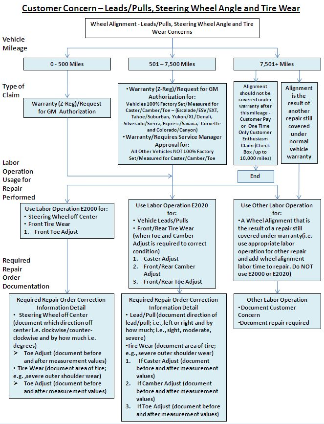
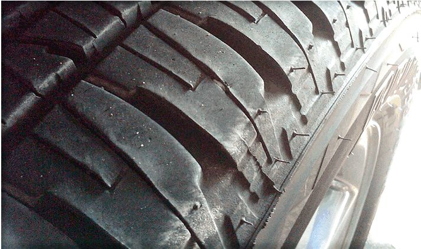
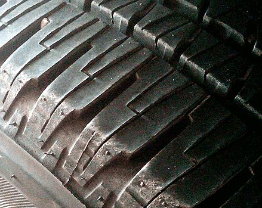
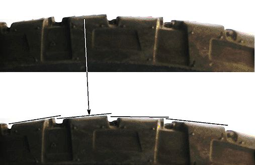
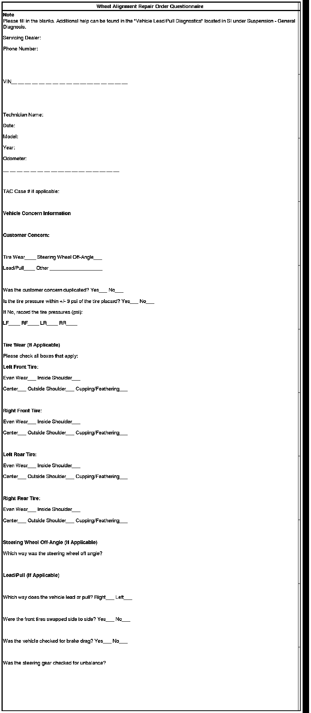
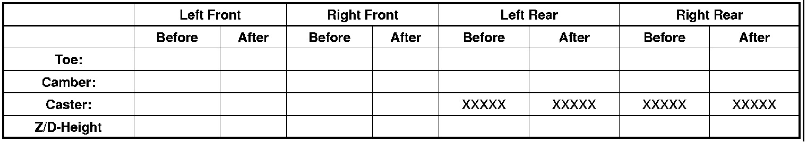

Steering/Suspension - Wheel Alignment Specifications
WARRANTY ADMINISTRATIONBulletin No.: 05-03-07-009C
Date: December 09, 2010
Subject: Wheel Alignment Specifications, Requirements and Recommendations for GM Vehicles
Models:
2011 and Prior GM Passenger Cars and Light Duty Trucks
Supercede:
This bulletin is being extensively revised to provide technicians and warranty administrators with an all inclusive guide for wheel alignments. PLEASE FAMILIARIZE YOURSELF WITH THESE UPDATES BEFORE PERFORMING YOUR NEXT GM WHEEL ALIGNMENT SERVICE. Please discard Corporate Bulletin Number 05-03-07-009B (Section 03 - Suspension).
Purpose
The purpose of this bulletin is to provide retail, wholesale and fleet personnel with General Motors' warranty service requirements and recommendations for customer concerns related to wheel alignment. For your convenience, this bulletin updates and centralizes all of GM's Standard Wheel Alignment Service Procedures, Policy Guidelines and bulletins on wheel alignment warranty service.
Important
PLEASE FAMILIARIZE YOURSELF WITH THESE UPDATES BEFORE PERFORMING YOUR NEXT GM WHEEL ALIGNMENT SERVICE.
The following five (5) key steps are a summary of this bulletin and are REQUIRED in completing a successful wheel alignment service.
1. Verify the vehicle is in an Original Equipment condition for curb weight, tires, wheels, suspension and steering configurations. Vehicles modified in any of these areas are not covered for wheel alignment warranty.
2. Review the customer concern relative to "Normal Operation" definitions.
3. Verify that vehicle is within the "Mileage Policy" range.
4. Document wheel alignment warranty claims appropriately for labor operations E2000 and E2020.
The following information must be documented or attached to the repair order:
- Customer concern in detail
- What corrected the customer concern?
- If a wheel alignment is performed:
- Consult SI for proper specifications.
- Document the "Before" AND "After" wheel alignment measurements/settings.
- Completed "Wheel Alignment Repair Order Questionnaire" (form attached to this bulletin)
5. Use the proper wheel alignment equipment (preferred with print-out capability), process and the appropriate calibration maintenance schedules.
Important
If it is determined that a wheel alignment is necessary under warranty, use the proper labor code for the repair. E2000 for Steering Wheel Angle and/or Front Toe set or E2020 for Wheel Alignment Check/Adjust includes Caster, Camber and Toe set (Wheel alignment labor time for other component repairs is to be charged to the component that causes a wheel alignment operation.).
The following flowchart is to help summarize the information detailed in this bulletin and should be used whenever a wheel alignment is performed.

Verify Original Equipment Condition of the Vehicle
- Verify that Original Equipment Tires and Wheels or Official GM Accessory Tires and Wheels are on the vehicle.
- Verify that aftermarket suspension "Lift" or "Lowering" Kits or other suspension alterations have NOT been done to the vehicle.
- Check for accidental damage to the vehicle; for example, severe pothole or curb impacts, collision damage that may have affected the wheel alignment of the vehicle; e.g., engine cradles, suspension control arms, axles, wheels, wheel covers, tires may show evidence of damage/impact.
- Check to be sure vehicle has seen "Normal Use" rather than abuse; e.g., very aggressive driving may show up by looking at the tires and condition of the vehicle.
- Check for other additional equipment items that may significantly affect vehicle mass such as large tool boxes, campers, snow plow packages (without the snowplow RPO), etc., especially in trucks and cutaway/incomplete vehicles. Significant additional mass can affect trim height and wheel alignment of the vehicle and may necessitate a customer pay wheel alignment when placed semi-permanently in the vehicle (Upfitter instructions are to realign the vehicle after placement of these types of items. (This typically applies to trucks and incomplete vehicles that can be upfit with equipment such as the above.)
Customer Concerns, "Normal Operation" Conditions and "Mileage Policy"
Possible Concerns
The following are typical conditions that may require wheel alignment warranty service:
1. Lead/Pull: defined as "at a constant highway speed on a typical straight road, the amount of effort required at the steering wheel to maintain the vehicle's straight heading."
Important
Please evaluate for the condition with hands-on the steering wheel. Follow the "Vehicle Leads/Pulls" diagnostic tree located in SI to determine the cause of a lead/pull concern. Lead/Pull concerns can be due to road crown or road slope, tires, wheel alignment or even in rare circumstances a steering gear issue. Lead/pull concerns due to road crown are considered "Normal Operation" and are NOT a warrantable condition -- the customer should be advised that this is "Normal Operation."
Important
Some customers may comment on a "Lead/Pull" when they hold the steering wheel in a level condition. If so, this is more likely a "steering wheel angle" concern because the customer is "steering" the vehicle to obtain a "level" steering wheel.
2. Steering wheel angle to the left or right (counter-clockwise or clockwise, respectively): Defined as the steering wheel angle (clocking) deviation from "level" while maintaining a straight heading on a typical straight road.
3. Irregular or Premature tire wear: Slight to very slight "feathering" or "edge" wear on the shoulders of tires is NOT considered unusual and should even out with a tire rotation; if the customer is concerned about a "feathering" condition of the tires, the customer could be advised to rotate the tires earlier than the next scheduled mileage/maintenance interval (but no later than the next interval). Be sure to understand the customer's driving habits as this will also heavily influence the tire wear performance; tire wear from aggressive or abusive driving habits is NOT a warrantable condition.
Important
Slight or mild feathering, cupping, edge or heel/toe wear of tire tread shoulders is "normal" and can show up very early in a tire/vehicle service mileage; in fact, some new tires can show evidence of feathering from the factory. These issues do NOT affect the overall performance and tread life of the tire. Dealer personnel should always check the customer's maintenance records to ensure that tire inflation pressure is being maintained to placard and that the tires are being rotated (modified-X pattern) at the proper mileage intervals. Wheel alignments are NOT to be performed for the types of "Normal" Tire Feathering shown in Figures 1-4 below.
Figure 1: Full Tread View - "NORMAL" Tire "Feathering" Wear on the Shoulder/Adjacent/Center Ribs

Figure 2: Tire Shoulder View Example 1 - "NORMAL" Tire "Feathering" Wear on the Shoulder

Figure 3: Tire Shoulder View Example 2 - "NORMAL" Tire "Feathering" Wear

Figure 4: Detail Side View of Tire Shoulder Area - "NORMAL" Tire "Feathering" Wear

Important
When a wheel alignment is deemed necessary for tire wear, be sure to document on the repair order, in as much detail as possible, the severity and type of tire wear (e.g., severe center wear or severe inside or outside shoulder wear) and the position of the tire on the vehicle (RF, LF, LR, RR). Please note the customer's concern with the wear such as, noise, appearance, wear life, etc. A field product report with pictures of the tire wear condition is recommended. Refer to Corporate Bulletin Number 02-00-89-002J and #07-00-89-036C.
4. Other repairs that affect wheel alignment; e.g., certain component replacement such as suspension control arm replacement, engine cradle adjustment/replace, steering gear replacement, steering tie rod replace, suspension strut/shock, steering knuckle, etc. may require a wheel alignment.
Important
If other components or repairs are identified as affecting the wheel alignment, policy calls for the wheel alignment labor time to be charged to the replaced/repaired component's labor operation time rather than the wheel alignment labor operations.
Important
Vibration type customer concerns are generally NOT due to wheel alignment except in the rare cases; e.g., extreme diagonal wear across the tread. In general, wheel alignments are NOT to be performed as an investigation/correction for vibration concerns.
"Normal Operation" Conditions
Vehicle Lead/Pull Due to Road Crown or Slope:
As part of "Normal Operation," vehicles will follow side-to-side or left to right road crown or slope. Be sure to verify from the customer the types of roads they are driving as they may not recognize the influence of road crown on vehicle lead/pull and steering wheel angle. If a vehicle requires significant steering effort to prevent it from "climbing" the road crown there may be an issue to be looked into further.
Important
A wheel alignment will generally NOT correct vehicles that follow the road crown since this is within "Normal Operation."
Mileage Policy
The following mileage policy applies for E2020 and E2000 labor operations:
Note
Wheel Alignment is NOT covered under the New Vehicle Limited Warranty for Express and Savana Cutaway vehicles as these vehicles require Upfitters to set the wheel alignment after completing the vehicles.
- 0-800 km (0-500 mi): E2000/E2020 claims ONLY allowed with Call Center Authorization. Due to the tie down during shipping, the vehicle's suspension requires some time to reach normal operating position. For this reason, new vehicles are generally NOT to be aligned until they have accumulated at least 800 km (500 mi). A field product report should accompany any claim within this mileage range.
- 801-12,000 km (501-7,500 mi):
- If a vehicle came from the factory with incorrect alignment settings, any resulting off-angle steering wheel, lead/pull characteristics or the rare occurrence of excessive tire wear would be apparent early in the life of the vehicle. The following policy applies:
- Vehicles 100% Factory Set/Measured for Caster/Camber/Toe - Escalade/ESV/EXT, Tahoe/Suburban, Yukon/XL/Denali, Silverado/Sierra, Express/Savana, Corvette and Colorado/Canyon:
E2000/E2020 Claims: Call Center Authorization Required
- All Vehicles NOT 100% Factory Set/Measured for Caster/Camber/Toe as noted above:
E2000/E2020 Claims: Dealer Service Manager Authorization Required
- 12,001 km and beyond (7,501 miles and beyond): During this period, customers are responsible for the wheel alignment expense or dealers may provide on a case-by case basis a one-time customer enthusiasm claim up to 16,000 km (10,000 mi). In the event that a defective component required the use of the subject labor operations, the identified defective component labor operation will include the appropriate labor time for a wheel alignment as an add condition to the component repair.
Important
Only one wheel alignment labor operation claim (E2000 or E2020) may be used per VIN.
Warranty Documentation Requirements
When a wheel alignment service has been deemed necessary, the following items will need to be clearly documented on/with the repair order:
- Customer concern in detail
- What corrected the customer concern?
- If a wheel alignment is performed:
- Consult SI for proper specifications.
- Document the "Before" AND "After" wheel alignment measurements/settings.
- Completed "Wheel Alignment Repair Order Questionnaire" (form attached to this bulletin)
1. Document the customer concern in as much detail as possible on the repair order and in the warranty administration system. Preferred examples:
- Steering wheel is off angle in the counterclockwise direction by approximately x degrees or clocking position.
- Vehicle lead/pulls to the right at approximately x-y mph. Vehicle will climb the road crown. Severe, Moderate or Slight.
- RF and LF tires are wearing on the outside shoulders with severe feathering.
Important
In the event of a lead/pull or steering wheel angle concern, please note the direction of lead/pull (left or right) or direction of steering wheel angle (clockwise or counterclockwise) on the repair order and within the warranty claim verbatim.
Important
In the event of a tire wear concern, please note the position on the vehicle and where the wear is occurring on the tire; i.e., the RF tire is wearing on the inside shoulder.
2. Document the technician's findings on cause and correction of the issue. Examples:
- Reset LF toe from 0.45 degrees to 0.10 degrees and RF toe from -0.25 degrees to 0.10 degrees to correct the steering wheel angle from 5 degrees counterclockwise to 0 degrees.
- Reset LF camber from 0.25 degrees to -0.05 degrees to correct the cross-camber condition of +0.30 degrees to 0.00 degrees on the vehicle.
- Front Sum toe was found to be 0.50 degrees, reset to 0.20 degrees.
3. Print-out the "Before" and "After" wheel alignment measurements/settings and attach them to the Repair Order or if print-out capability is not available, measurements may also be clearly and legibly handwritten into the Wheel Alignment Repair Order Questionnaire attached to this bulletin.
4. Attach the Wheel Alignment Repair Order Questionnaire below along with the print-out of "Before" and "After" wheel alignment measurements to the Repair Order and retain for use by GM.
Wheel Alignment Equipment and Process
Wheel alignments must be performed with a quality machine that will give accurate results when performing checks. "External Reference" (image-based camera technology) is preferred. Please refer to Corporate Bulletin Number 05-00-89-029B: General Motors Dealership Critical Equipment Requirements and Recommendations.
Requirements:
- Computerized four wheel alignment system.
- Computer capable of printing before and after alignment reports.
- Computer capable of time and date stamp printout.
- Racking system must have jacking capability
- Racking system must be capable of level to 1.6 mm (1/16 in)
- Appropriate wheel stops and safety certification
- Built-in turn plates and slip plates
- Wheel clamps capable of attaching to 20" or larger wheels
- Racking capable of accepting any GM passenger car or light duty truck
- Operator properly trained and ASE-certified (U.S. only) in wheel alignment
Recommendations:
Racking should have front and rear jacking capability.
Equipment Maintenance and Calibration:
Alignment machines must be regularly calibrated in order to give correct information. Most manufacturers recommend the following:
- Alignment machines with "internal reference" sensors should be checked (and calibrated, if necessary) every six months.
- Alignment machines with "external reference" (image-based camera technology) should be checked (and calibrated, if necessary) once a year.
- Racks must be kept level to within 1.6 mm (1/16 in).
- If any instrument that is part of the alignment machine is dropped or damaged in some way, check the calibration immediately.
Check with the manufacturer of your specific equipment for their recommended service/calibration schedule.
Wheel Alignment Process
When performing wheel alignment measurement and/or adjustment, the following steps should be taken:
Preliminary Steps:
1. Verify that the vehicle has a full tank of fuel (compensate as necessary).
2. Inspect the wheels and the tires for damage.
3. Inspect the tires for the proper inflation and irregular tire wear.
4. Inspect the wheel bearings for excessive play.
5. Inspect all suspension and steering parts for looseness, wear, or damage.
6. Inspect the steering wheel for excessive drag or poor return due to stiff or rusted linkage or suspension components.
7. Inspect the vehicle trim height.
8. Compensate for frame angle on targeted vehicles (refer to Wheel Alignment Specifications in SI).
Satisfactory vehicle operation may occur over a wide range of alignment angles. However, if the wheel alignment angles are not within the range of specifications, adjust the wheel alignment to the specifications. Refer to Wheel Alignment Specifications in SI. Give consideration to excess loads, such as tool boxes, sample cases, etc. Follow the wheel alignment equipment manufacturer's instructions.
Measure/Adjust:
Important
Prior to making any adjustments to wheel alignment on a vehicle, technicians must verify that the wheel alignment specifications loaded into their wheel alignment machine are up-to-date by comparing these to the wheel alignment specifications for the appropriate model and model year in SI. Using incorrect and/or outdated specifications may result in unnecessary adjustments, irregular and/or premature tire wear and repeat customer concerns
Important
When performing adjustments to vehicles requiring a 4-wheel alignment, set the rear wheel alignment angles first in order to obtain proper front wheel alignment angles.
Perform the following steps in order to measure the front and rear alignment angles:
1. Install the alignment equipment according to the manufacturer's instructions.
2. Jounce the front and the rear bumpers 3 times prior to checking the wheel alignment.
3. Measure the alignment angles and record the readings.
If necessary, adjust the wheel alignment to vehicle specification and record the before and after measurements. Refer to Wheel Alignment Specifications in SI.
Important
Technicians must refer to SI for the correct wheel alignment specifications. SI is the only source of GM wheel alignment specifications that is kept up-to-date throughout the year.
Test drive vehicle to ensure proper repair.


Frame Angle Measurement (Express / Savana Only) ........
What corrected the customer concern and was the repair verified?
Please Explain: .............

Disclaimer